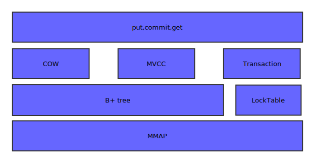

Symas Lightning Memory-Mapped Database (LMDB) Notes
Table of Contents
Overview
- homepage: http://symas.com/mdb/
- https://github.com/LMDB/lmdb
- official repo on openldap.org: http://www.openldap.org/software/repo.html
LMDB(Lightning Memory-Mapped Database) is a tiny database with some great capabilities:
- Ordered-map interface (keys are always sorted, supports range lookups)
- Fully transactional, full ACID (Atomicity, Consistency, Isolation, Durability) semantics with MVCC(Multiversion concurrency control).
- Reader/writer transactions: readers don't block writers and writers don't block readers. Writers are fully serialized, so writes are always deadlock-free.
- Read transactions are extremely cheap, and can be performed using no mallocs or any other blocking calls.
- Supports multi-thread and multi-process concurrency, environments may be opened by multiple processes on the same host.
- Multiple sub-databases may be created with transactions covering all sub-databases.
- Memory-mapped, allowing for zero-copy lookup and iteration.
- Maintenance-free, no external process or background cleanup/compaction required.
- Crash-proof, no logs or crash recovery procedures required.
- No application-level caching. LMDB fully exploits the operating system's buffer cache.
- 32KB of object code and 6KLOC of C.
LMDB基本架构
lmdb的基本架构如下: 
lmdb的基本做法是使用mmap文件映射，不管这个文件存储实在内存上还是在持久存储上。lmdb的所有读取操作都是通过mmap将要访问的文件只读的映射到虚拟内存中，直接访问相应的地址.因为使用了read-only的mmap，同样避免了程序错误将存储结构写坏的风险。并且IO的调度由操作系统的页调度机制完成。而写操作，则是通过write系统调用进行的，这主要是为了利用操作系统的文件系统一致性，避免在被访问的地址上进行同步。
lmdb把整个虚拟存储组织成B+Tree存储,索引和值读存储在B+Tree的页面上.对外提供了关于B+Tree的操作方式，利用cursor游标进行。可以进行增删改查。
Memory Map原理
B-tree/B+tree/B*tree
COW and MVCC
事务控制
核心代码流程
LMDB 核心数据结构
MDB_env
struct MDB_env { HANDLE me_fd; /**< The main data file */ HANDLE me_lfd; /**< The lock file */ HANDLE me_mfd; /**< just for writing the meta pages */ uint32_t me_flags; /**< @ref mdb_env */ unsigned int me_psize; /**< DB page size, inited from me_os_psize */ unsigned int me_os_psize; /**< OS page size, from #GET_PAGESIZE */ unsigned int me_maxreaders; /**< size of the reader table */ /** Max #MDB_txninfo.%mti_numreaders of interest to #mdb_env_close() */ volatile int me_close_readers; MDB_dbi me_numdbs; /**< number of DBs opened */ MDB_dbi me_maxdbs; /**< size of the DB table */ MDB_PID_T me_pid; /**< process ID of this env */ char *me_path; /**< path to the DB files */ char *me_map; /**< the memory map of the data file */ MDB_txninfo *me_txns; /**< the memory map of the lock file or NULL */ MDB_meta *me_metas[NUM_METAS]; /**< pointers to the two meta pages */ void *me_pbuf; /**< scratch area for DUPSORT put() */ MDB_txn *me_txn; /**< current write transaction */ MDB_txn *me_txn0; /**< prealloc'd write transaction */ mdb_size_t me_mapsize; /**< size of the data memory map */ off_t me_size; /**< current file size */ pgno_t me_maxpg; /**< me_mapsize / me_psize */ MDB_dbx *me_dbxs; /**< array of static DB info */ uint16_t *me_dbflags; /**< array of flags from MDB_db.md_flags */ unsigned int *me_dbiseqs; /**< array of dbi sequence numbers */ pthread_key_t me_txkey; /**< thread-key for readers */ txnid_t me_pgoldest; /**< ID of oldest reader last time we looked */ MDB_pgstate me_pgstate; /**< state of old pages from freeDB */ # define me_pglast me_pgstate.mf_pglast # define me_pghead me_pgstate.mf_pghead MDB_page *me_dpages; /**< list of malloc'd blocks for re-use */ /** IDL of pages that became unused in a write txn */ MDB_IDL me_free_pgs; /** ID2L of pages written during a write txn. Length MDB_IDL_UM_SIZE. */ MDB_ID2L me_dirty_list; /** Max number of freelist items that can fit in a single overflow page */ int me_maxfree_1pg; /** Max size of a node on a page */ unsigned int me_nodemax; #if !(MDB_MAXKEYSIZE) unsigned int me_maxkey; /**< max size of a key */ #endif int me_live_reader; /**< have liveness lock in reader table */ # define me_rmutex me_txns->mti_rmutex /**< Shared reader lock */ # define me_wmutex me_txns->mti_wmutex /**< Shared writer lock */ void *me_userctx; /**< User-settable context */ MDB_assert_func *me_assert_func; /**< Callback for assertion failures */ };
me_rmutext，me_wmutex: 锁表互斥所，lmdb可以支持多线程、多进程。多进程之间的同步访问通过系统级的互斥来达到。其mutex本身存在于系统的共享内存当中而非进程本身的内存，因此在进行读写页面时，首先访问锁表看看对应的资源是否有别的进程、线程在进行，有的话需要根据事务规则要求进行排队等待。me_txn,me_txns: 目前环境中使用的事务列表，一个env对象归属于一个进程，一个进程可能有多个线程使用同一个env，每个线程可以开启一个事务，因此在一个进程级的env对象需要维护txn列表以了解目前多少个线程及事务在进行工作。- meflags: 标志,标志控制的数据库的许多行为，每次使用env之前必须设置，应用程序应该用一致的方式使用flags，否则数据库可能会出现不可预知的错误。
- medbxs: 数据库对象
MDB_envinfo
typedef struct MDB_envinfo { void *me_mapaddr; /**< Address of map, if fixed */ mdb_size_t me_mapsize; /**< Size of the data memory map */ mdb_size_t me_last_pgno; /**< ID of the last used page */ mdb_size_t me_last_txnid; /**< ID of the last committed transaction */ unsigned int me_maxreaders; /**< max reader slots in the environment */ unsigned int me_numreaders; /**< max reader slots used in the environment */ } MDB_envinfo;
MDB_meta
/** Meta page content. * A meta page is the start point for accessing a database snapshot. * Pages 0-1 are meta pages. Transaction N writes meta page #(N % 2). */ typedef struct MDB_meta { /** Stamp identifying this as an LMDB file. It must be set * to #MDB_MAGIC. */ uint32_t mm_magic; /** Version number of this file. Must be set to #MDB_DATA_VERSION. */ uint32_t mm_version; void *mm_address; /**< address for fixed mapping */ pgno_t mm_mapsize; /**< size of mmap region */ MDB_db mm_dbs[CORE_DBS]; /**< first is free space, 2nd is main db */ /** The size of pages used in this DB */ #define mm_psize mm_dbs[FREE_DBI].md_pad /** Any persistent environment flags. @ref mdb_env */ #define mm_flags mm_dbs[FREE_DBI].md_flags pgno_t mm_last_pg; /**< last used page in file */ volatile txnid_t mm_txnid; /**< txnid that committed this page */ } MDB_meta;
- meta页面循环使用，即id为1，修改页面1，id为2，修改页面0.
mm_dbs[CORE_DBS]数据库B+Tree根，同时保存两个:FREE_DBI和MAIN_DBI.MDB_page
typedef struct MDB_page { #define mp_pgno mp_p.p_pgno #define mp_next mp_p.p_next union { pgno_t p_pgno; /**< page number */ struct MDB_page *p_next; /**< for in-memory list of freed pages */ } mp_p; uint16_t mp_pad; uint16_t mp_flags; /**< @ref mdb_page */ #define mp_lower mp_pb.pb.pb_lower #define mp_upper mp_pb.pb.pb_upper #define mp_pages mp_pb.pb_pages union { struct { indx_t pb_lower; /**< lower bound of free space */ indx_t pb_upper; /**< upper bound of free space */ } pb; uint32_t pb_pages; /**< number of overflow pages */ } mp_pb; indx_t mp_ptrs[1]; /**< dynamic size */ } MDB_page;
- page描述了不同页面的头。不管是树中的root、还是branch、leaf页面，都是用它描述。
- 对于overflow页面来说，只有第一页使用头进行描述，其后的连续页面不使用，仅仅使用指针将页面关联起来.
mp_flags: 代表是什么类型的页面mp_pb: overflow页数或者当前页的可用空间MDB_node
typedef struct MDB_node { /** lo and hi are used for data size on leaf nodes and for * child pgno on branch nodes. On 64 bit platforms, flags * is also used for pgno. (Branch nodes have no flags). * They are in host byte order in case that lets some * accesses be optimized into a 32-bit word access. */ unsigned short mn_lo, mn_hi; /**< part of data size or pgno */ unsigned short mn_flags; /**< @ref mdb_node */ unsigned short mn_ksize; /**< key size */ char mn_data[1]; /**< key and data are appended here */ } MDB_node;
- node代表key/value对的描述，是对branch、leaf页中的数据的描述
mn_flags: 标志：是否重复、子数据库、overflow等mn_hi.lo: 数据大小或者页码mn_data: 数据指针MDB_db
/** Information about a single database in the environment. */ typedef struct MDB_db { uint32_t md_pad; /**< also ksize for LEAF2 pages */ uint16_t md_flags; /**< @ref mdb_dbi_open */ uint16_t md_depth; /**< depth of this tree */ pgno_t md_branch_pages; /**< number of internal pages */ pgno_t md_leaf_pages; /**< number of leaf pages */ pgno_t md_overflow_pages; /**< number of overflow pages */ mdb_size_t md_entries; /**< number of data items */ pgno_t md_root; /**< the root page of this tree */ } MDB_db;
- mdbdb描述了一颗单独的b+tree树，主要包含了一些相关的信息和根节点页码
MDB_txn
struct MDB_txn { MDB_txn *mt_parent; /**< parent of a nested txn */ /** Nested txn under this txn, set together with flag #MDB_TXN_HAS_CHILD */ MDB_txn *mt_child; pgno_t mt_next_pgno; /**< next unallocated page */ txnid_t mt_txnid; MDB_env *mt_env; /**< the DB environment */ /** The list of pages that became unused during this transaction. */ MDB_IDL mt_free_pgs; /** The list of loose pages that became unused and may be reused * in this transaction, linked through #NEXT_LOOSE_PAGE(page). */ MDB_page *mt_loose_pgs; /* #Number of loose pages (#mt_loose_pgs) */ int mt_loose_count; /** The sorted list of dirty pages we temporarily wrote to disk * because the dirty list was full. page numbers in here are * shifted left by 1, deleted slots have the LSB set. */ MDB_IDL mt_spill_pgs; union { /** For write txns: Modified pages. Sorted when not MDB_WRITEMAP. */ MDB_ID2L dirty_list; /** For read txns: This thread/txn's reader table slot, or NULL. */ MDB_reader *reader; } mt_u; /** Array of records for each DB known in the environment. */ MDB_dbx *mt_dbxs; /** Array of MDB_db records for each known DB */ MDB_db *mt_dbs; /** Array of sequence numbers for each DB handle */ unsigned int *mt_dbiseqs; /** In write txns, array of cursors for each DB */ MDB_cursor **mt_cursors; /** Array of flags for each DB */ unsigned char *mt_dbflags; /** Number of DB records in use, or 0 when the txn is finished. * This number only ever increments until the txn finishes; we * don't decrement it when individual DB handles are closed. */ MDB_dbi mt_numdbs; unsigned int mt_flags; /**< @ref mdb_txn */ /** #dirty_list room: Array size - \#dirty pages visible to this txn. * Includes ancestor txns' dirty pages not hidden by other txns' * dirty/spilled pages. Thus commit(nested txn) has room to merge * dirty_list into mt_parent after freeing hidden mt_parent pages. */ unsigned int mt_dirty_room; };
mdb_txn描述了数据库的事务结构,mdb中的事务支持嵌套事务。支持完全ACID 属性，但是只支持serializable事务隔离级别,通过同一个env对应的数据库只允许一个事务写来控制。mt_child,parent：事务嵌套父子关系mt_cursor: 写事务中每个数据库中已经打开的游标。MDB_cursor
struct MDB_cursor { /** Next cursor on this DB in this txn */ MDB_cursor *mc_next; /** Backup of the original cursor if this cursor is a shadow */ MDB_cursor *mc_backup; /** Context used for databases with #MDB_DUPSORT, otherwise NULL */ struct MDB_xcursor *mc_xcursor; /** The transaction that owns this cursor */ MDB_txn *mc_txn; /** The database handle this cursor operates on */ MDB_dbi mc_dbi; /** The database record for this cursor */ MDB_db *mc_db; /** The database auxiliary record for this cursor */ MDB_dbx *mc_dbx; /** The @ref mt_dbflag for this database */ unsigned char *mc_dbflag; unsigned short mc_snum; /**< number of pushed pages */ unsigned short mc_top; /**< index of top page, normally mc_snum-1 */ unsigned int mc_flags; /**< @ref mdb_cursor */ MDB_page *mc_pg[CURSOR_STACK]; /**< stack of pushed pages */ indx_t mc_ki[CURSOR_STACK]; /**< stack of page indices */ };
- 游标对象是进行所有数据库操作的对象，读写都是基于游标进行。进行读写操作时，首先需要根据条件确定页面位置，从而获得一个游标，应用程序根据游标对象操作数据库。
mc_next: 同一个事务中关于同一个db的游标组成一个列表。next指向下一个游标mc_top: 最上层页面idmc_xcursor: 用于key可重复b+tree。mc_pg: cursor打开的页面组成一个堆栈mc_ki: 打开页面的索引的堆栈